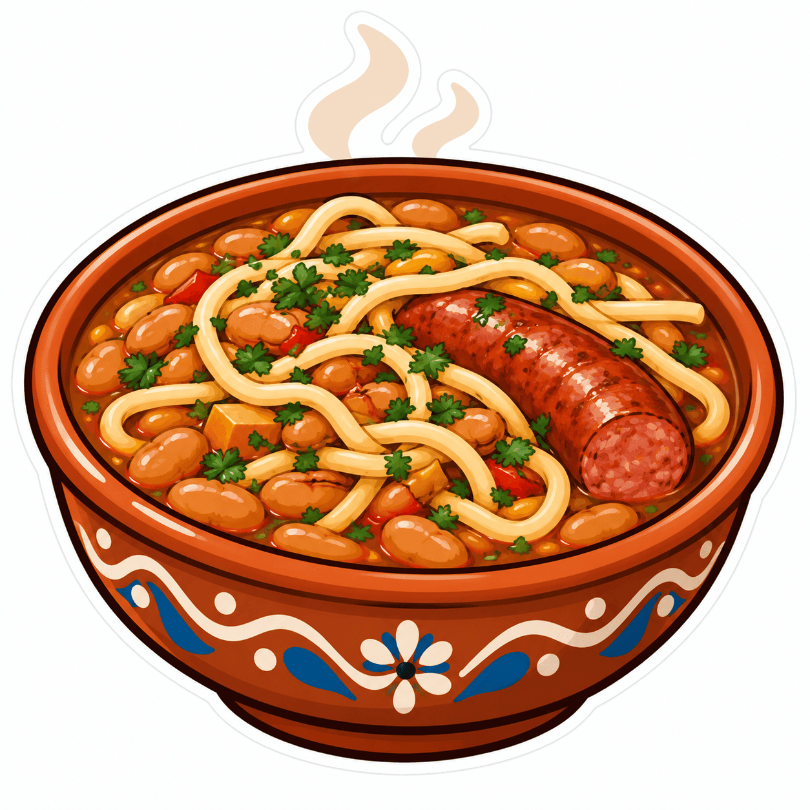

Ingredientes
Preparación
- La noche anterior, deja los porotos remojando en abundante agua fría. Al día siguiente, escúrrelos y enjuágalos.
- En una olla grande, pon los porotos con agua fresca que los cubra por unos 3 dedos. Agrega el zapallo en cubos y cocina a fuego medio hasta que los porotos estén blandos (unos 30-40 minutos).
- Mientras se cocinan los porotos, prepara el sofrito: en una sartén con un poco de aceite, sofríe la cebolla, el ajo y la longaniza hasta que doren. Agrega el orégano, comino y ají de color, y revuelve un minuto más.
- Incorpora el sofrito a la olla de porotos y mezcla bien. Ajusta la sal y pimienta.
- Agrega los tallarines (puedes partirlos por la mitad para que sean más fáciles de comer) y cocina por 8 a 10 minutos más, hasta que la pasta esté al dente y el caldo haya espesado.
- Sirve bien caliente en platos hondos, con un chorrito de aceite crudo por encima si te gusta.
Dato: El nombre "riendas" nace en el campo chileno: antiguamente se usaban tiras de cuero de cerdo que, al cocinarse, parecían las riendas de los caballos. Con el tiempo, la ciudad las reemplazó por tallarines, pero el nombre se mantuvo.